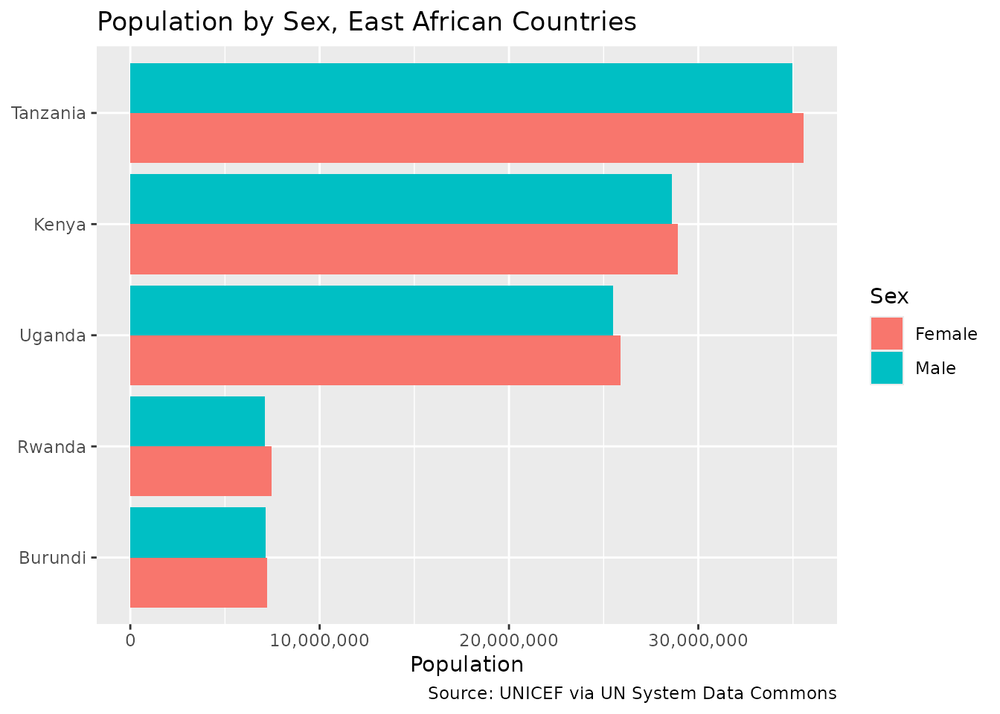

Using the UN System Data Commons
Source:vignettes/using-un-data-commons.Rmd
using-un-data-commons.RmdLearning Objectives
By the end of this vignette, you will be able to:
- Point the
datacommonsR package at a custom Data Commons deployment instead of the publicapi.datacommons.orgendpoint - Query the UN System Data Commons, a deployment maintained by the UN Statistics Division on the same Data Commons Core software
- Explore UN-specific statistical variables and place hierarchies
through
dc_get_node() - Retrieve and compare observations across countries through
dc_get_observations() - Resolve place names to DCIDs through
dc_get_resolve() - Understand which parts of the API are available on this particular deployment
Why a Different Deployment?
Data Commons isn’t a single server: it’s an open-source graph
platform (“Data Commons Core”) that different organizations can deploy
with their own data. The public api.datacommons.org
endpoint is Google’s instance, blended from many sources. The UN System Data
Commons is the UN Statistics Division’s own deployment of the same
software, built from official UN statistical series (UNICEF, UN
Population Division, and other UN agencies) instead of Google’s
blend.
Because both run the same underlying API, the
datacommons R package can talk to either one. All you
change is the base_url (and, for the UN deployment, you
don’t need an API key at all).
Pointing the Package at the UN Deployment
Every function in the package accepts a base_url
argument, defaulting to Sys.getenv("DATACOMMONS_BASE_URL")
with a fallback to the public endpoint. Instead of passing
base_url on every call, set it once for the session with
dc_set_base_url():
un_base_url <- "https://unsd-datacommons.gcp.un-icc.cloud/core/api/v2/"
dc_set_base_url(un_base_url)This deployment answers requests without an API key, so there is no
equivalent of dc_set_api_key() to call here. If that ever
changes, or if you use a different Data Commons Core deployment that
does require one, pass api_key the same way you would for
the public API.
Any call you make for the rest of this session — or until you call
dc_set_base_url() again — goes to the UN deployment.
Example 1: Inspecting the Graph
The UN deployment ships its own guide
to inspecting the graph over REST, which maps directly onto
dc_get_node(). Let’s find out what a country is contained
in:
rwanda_regions <- dc_get_node(
nodes = "country/RWA",
expression = "->containedInPlace",
return_type = "list"
)
rwanda_regions$data$`country/RWA`$arcs$containedInPlace$nodes |>
lapply(\(x) {
data.frame(
name = x$name,
types = paste(x$types, collapse = ", ")
)
}) |>
bind_rows() |>
kable(caption = "Places containing Rwanda")| name | types |
|---|---|
| Eastern Africa | UNGeoRegion |
| Sub-Saharan Africa | UNGeoRegion |
| Africa | Continent |
| Landlocked developing countries (LLDCs) | GeoRegion |
| Landlocked developing countries (LLDCs): Africa | GeoRegion |
| Least developed countries (LDCs) | GeoRegion |
| Least developed countries (LDCs): Africa | GeoRegion |
UN statistical variables follow their own DCID convention, prefixed
by the contributing agency,
e.g. undata/unicef/DM_POP.SEX--F for “total population,
female”. You can inspect what a variable belongs to the same way you
would inspect a place:
dc_get_node(
nodes = "undata/unicef/DM_POP.SEX--F",
expression = "->[name, populationType]",
return_type = "list"
) |>
str(max.level = 5)
#> List of 1
#> $ data:List of 1
#> ..$ undata/unicef/DM_POP.SEX--F:List of 1
#> .. ..$ arcs:List of 2
#> .. .. ..$ name :List of 1
#> .. .. .. ..$ nodes:List of 1
#> .. .. ..$ populationType:List of 1
#> .. .. .. ..$ nodes:List of 1Example 2: Comparing Population by Sex Across Countries
Real-world motivation: UNICEF’s demographic series break population down by sex, age, and other dimensions. Let’s compare the female and male population of a group of East African countries.
east_africa <- c(
"country/BDI",
"country/KEN",
"country/RWA",
"country/TZA",
"country/UGA"
)
pop_by_sex <- dc_get_observations(
date = "latest",
variable_dcids = c(
"undata/unicef/DM_POP.SEX--F",
"undata/unicef/DM_POP.SEX--M"
),
entity_dcids = east_africa,
return_type = "data.frame"
) |>
mutate(sex = if_else(str_detect(variable_name, "Female"), "Female", "Male"))
pop_by_sex |>
select(country = entity_name, sex, value) |>
arrange(country, sex) |>
kable(caption = "Latest population by sex, East Africa")| country | sex | value |
|---|---|---|
| Burundi | Female | 7240984 |
| Burundi | Male | 7149018 |
| Kenya | Female | 28935936 |
| Kenya | Male | 28596556 |
| Rwanda | Female | 7456952 |
| Rwanda | Male | 7112388 |
| Tanzania | Female | 35568490 |
| Tanzania | Male | 34977375 |
| Uganda | Female | 25889256 |
| Uganda | Male | 25495638 |
ggplot(
pop_by_sex,
aes(x = reorder(entity_name, value), y = value, fill = sex)
) +
geom_col(position = "dodge") +
coord_flip() +
scale_y_continuous(labels = label_comma()) +
labs(
title = "Population by Sex, East African Countries",
x = NULL,
y = "Population",
fill = "Sex",
caption = "Source: UNICEF via UN System Data Commons"
)
Key insight: The same
dc_get_observations() call you’d use against
api.datacommons.org works unchanged here — only the
underlying variable and place DCIDs differ, because they come from a
different data source.
Example 3: Resolving Place Names
Just like the public API, the UN deployment supports resolving human-readable names to DCIDs:
dc_get_resolve(
nodes = c("Kenya", "Uganda"),
expression = "<-description->dcid",
return_type = "list"
) |>
str()
#> List of 1
#> $ entities:List of 2
#> ..$ :List of 2
#> .. ..$ node : chr "Kenya"
#> .. ..$ candidates:List of 1
#> .. .. ..$ :List of 1
#> .. .. .. ..$ dcid: chr "country/KEN"
#> ..$ :List of 2
#> .. ..$ node : chr "Uganda"
#> .. ..$ candidates:List of 1
#> .. .. ..$ :List of 1
#> .. .. .. ..$ dcid: chr "country/UGA"Limitations of This Deployment
Not every endpoint behaves the same across deployments. As of this
writing, the UN deployment’s edge infrastructure rejects
POST requests to /sparql with an HTTP 403
before they reach the application — GET requests to
/node, /observation, and /resolve
all work normally. This means dc_post_sparql() currently
won’t work against un_base_url, even though it works
against the public API. If you need SPARQL access to UN data, check with
the UN Statistics Division for the current status of that endpoint.
Tips for Working with Custom Deployments
-
base_urlmust end in/core/api/v2/: the package validates this for any URL other than the public default, to catch typos early. -
Explore before you query: use
dc_get_node()with<-typeOf,->containedInPlace, or<-memberto discover variable and place DCIDs specific to the deployment, the same way you’d use the Statistical Variable Explorer for the public API. -
Switch back when you’re done:
dc_set_base_url("https://api.datacommons.org/v2/")restores the default for the rest of your session. - Not all endpoints are guaranteed: a deployment can expose a subset of the API, or apply different infrastructure-level restrictions (as with SPARQL above). Test the specific endpoint you need.
Resources
- UN System Data Commons: https://unstats.un.org/UNSDWebsite/undatacommons/
- Inspecting the Graph with REST: https://projects.officialstatistics.org/undata2/undatacommons-mcp/inspecting-the-graph-with-rest/
- Data Commons API Documentation: https://docs.datacommons.org/api/rest/v2/